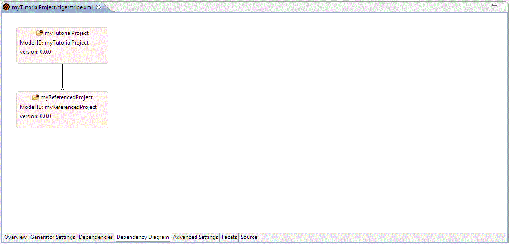

The Dependency Diagram tab allows you to visualise the dependencies of the Tigerstripe Model Project. The root of the diagram is the Model in this project itself, and the immediate children will be the dependencies as specified in the table in the Tigerstripe Project Dependencies Tab.

Double clicking on any element in the diagram will expand that item to show any further dependencies. If dependencies are currently being shown, then a double-click will hide those elements.
You can drag elements around the diagram to give a more pleasing layout. By right-clicking on the diagram background you can add notes, change element properties, and choose an auto-layout option. Changes to layout and graphical properties will be saved in the Tigerstripe project, so that the diagram will be redrawn as and when you re-open the editor on this tab.
Source Model
Project Descriptor
Tigerstripe Project Dependencies